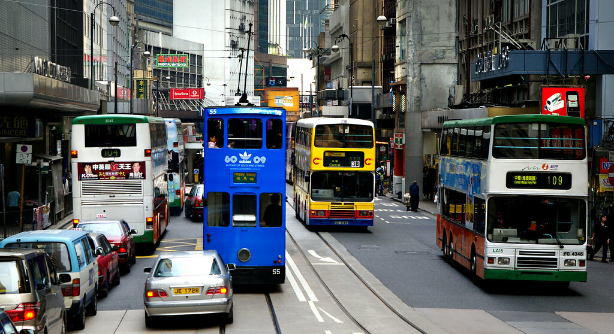
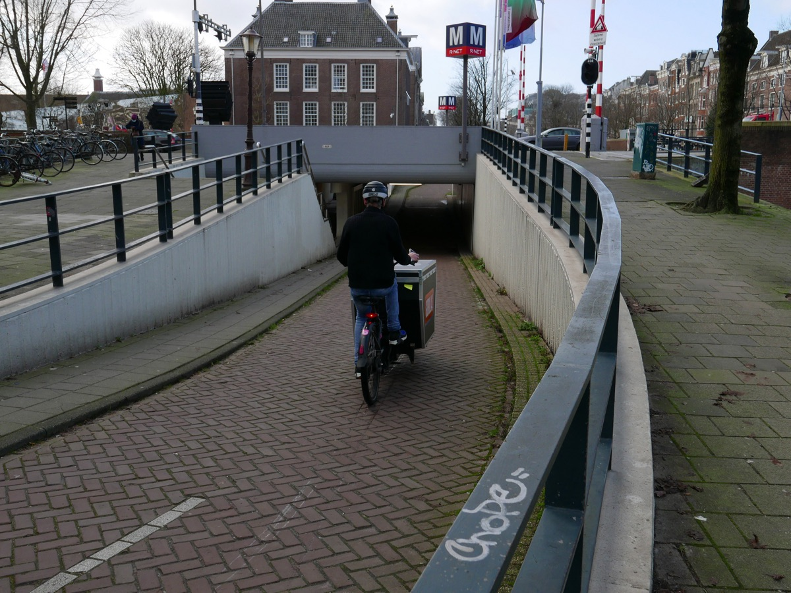
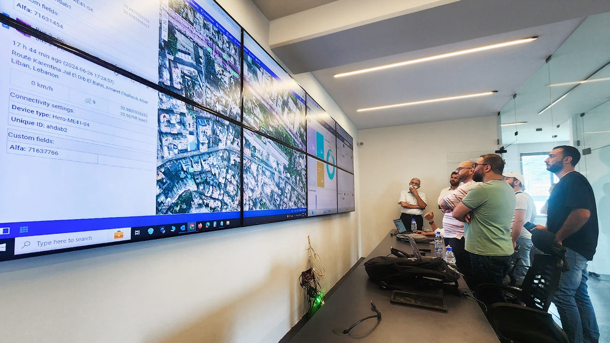
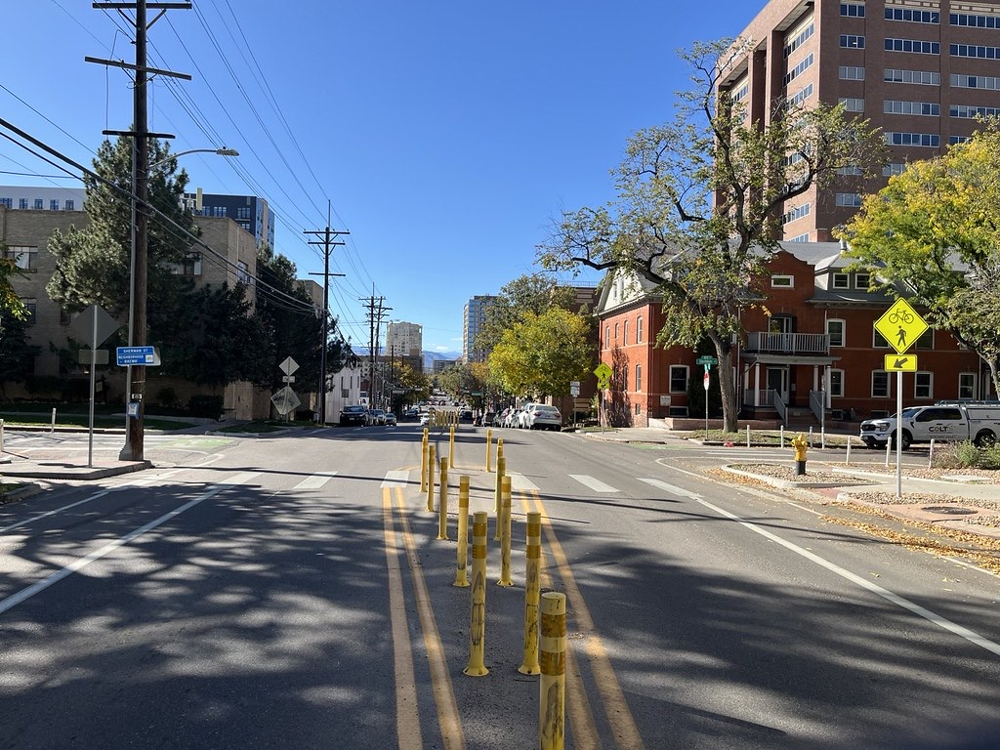

El Pleno de la Asamblea Nacional aprobó este Proyecto de Ley, que unificó varias iniciativas de distintas bancadas legislativas. El texto final fue impulsado por la bancada ADN.
Análisis de impacto empresarial
Proyecto de Ley Reformatoria a la Ley de Tránsito
Contexto
Trámite legislativo
Se aprobó con 87 votos a favor de las bancadas de ADN e independientes, la mayoría de Pachakutik y un legislador del PSC. La Revolución Ciudadana votó en contra.
La propuesta será remitida al Presidente de la República, quien tendrá hasta 30 días para sancionarla — enviarla al Registro Oficial — u objetarla de forma parcial, total o por inconstitucionalidad.
El análisis
Los 11 temas de la reforma
Cobertura completa de los 78 artículos y las disposiciones de la reforma, organizados en 11 temas, cada uno con su impacto.
Gobernanza institucional
Explorar
Quiénes integran y presiden los órganos rectores del sistema de
transporte.
Competencias de los GAD
Explorar
 Quién puede operar qué modalidad de transporte, y cuándo se
abren o congelan nuevas rutas.
Tarifas y procedimiento sancionador
Explorar
Quién puede operar qué modalidad de transporte, y cuándo se
abren o congelan nuevas rutas.
Tarifas y procedimiento sancionador
Explorar
 Cómo se fijan las tarifas y qué garantías aplican antes de una
multa o coactiva.
Seguridad vial
Explorar
Obligaciones de conducta en la vía y derechos de peatones y
biciusuarios.
Delivery y reparto a domicilio
Explorar
Cómo se fijan las tarifas y qué garantías aplican antes de una
multa o coactiva.
Seguridad vial
Explorar
Obligaciones de conducta en la vía y derechos de peatones y
biciusuarios.
Delivery y reparto a domicilio
Explorar
 Requisitos técnicos del vehículo, pólizas obligatorias y
protección económica ante accidentes.
Terminales terrestres
Explorar
Terminales, puertos secos y estaciones como infraestructura
estratégica del Estado.
Electromovilidad y micromovilidad
Explorar
Requisitos técnicos del vehículo, pólizas obligatorias y
protección económica ante accidentes.
Terminales terrestres
Explorar
Terminales, puertos secos y estaciones como infraestructura
estratégica del Estado.
Electromovilidad y micromovilidad
Explorar

Reparto de competencias entre Policía, ANT y GAD, y el control operativo del tránsito. Títulos habilitantes y rutas Explorar
Quién puede operar qué modalidad de transporte, y cuándo se
abren o congelan nuevas rutas.
Tarifas y procedimiento sancionador
Explorar
Cómo se fijan las tarifas y qué garantías aplican antes de una
multa o coactiva.
Seguridad vial
Explorar
Obligaciones de conducta en la vía y derechos de peatones y
biciusuarios.
Delivery y reparto a domicilio
Explorar

El reparto en motocicleta como categoría nueva del transporte comercial. Licencias y escuelas de conducción Explorar Emisión de licencias, formación de conductores y el nuevo régimen de escuelas. Digitalización y control tecnológico Explorar
Registro único, identificación vehicular, GPS y peajes interoperables. Homologación y SPPAT Explorar
Requisitos técnicos del vehículo, pólizas obligatorias y
protección económica ante accidentes.
Terminales terrestres
Explorar
Terminales, puertos secos y estaciones como infraestructura
estratégica del Estado.
Electromovilidad y micromovilidad
Explorar

Vehículos eléctricos livianos y de movilidad personal: reglas técnicas, circulación e infracciones.Implementación
Calendario de cumplimiento
Solo las obligaciones que corren contra el sector privado o condicionan su operación.
90 días
Ordenanzas de delivery
Los GAD deben emitir ordenanzas complementarias de delivery y habilitar denuncias ciudadanas en línea.
120 días
Registro de cuenta propia
La ANT habilita la herramienta de registro; hasta entonces no hay infracción por operar sin él.
180 días
SPPAT y frontera
Tasa SPPAT para eléctricos y mecanismo de recaudo para vehículos extranjeros.
1 año
Telepeaje en toda estación
Carril exclusivo de cobro electrónico obligatorio, a cargo de cada administrador vial, incluidos los privados.
360 días
Terminales bajo gestión no-GAD
Concesionarios distintos al GAD deben adecuarse y ceder la administración al vencer su contrato vigente.
365 días
Categorización de escuelas y eléctricos
Fin de la moratoria de escuelas de conducción; clasificación técnica de vehículos eléctricos livianos.
2 años
Plan Nacional de Rutas y peajes
Fin del congelamiento de rutas y frecuencias; integración obligatoria de todo administrador vial al sistema de peajes.
3 años
Registro de delivery, a régimen completo
Plazo máximo para la implementación progresiva del Registro Nacional de repartidores.